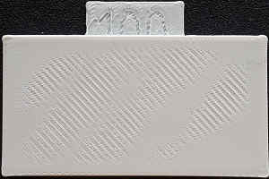
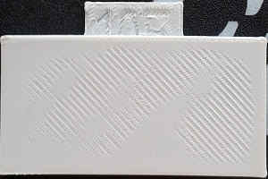
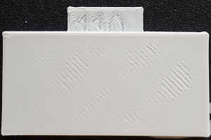
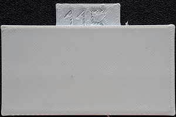
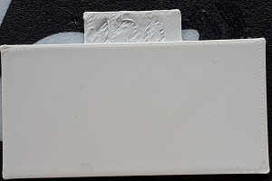

Calibration du débit Au dessus des ponts |
|
Vous devez faire la calibration du débit du filament et le Ratio de débit du pont avant celui-ci.Il est préférable que vous ayez fait la température du filament.
Cette méthode d'étalonnage permet d'imprimer des échantillons de test avec différents niveaux de Ratio de Débit du remplissage du dessus, entre 100 et 125. Choisissez la valeur la plus basse sur laquelle la surface supérieure est lisse sans "trous" rugueux. Commencez par la calibration de débit Au-dessus des ponts.
Si l'étalonnage pour les pont n'est pas concluant (mêmes trous sur tous les échantillons), réglez-le sur 110 % et utilisez l'étalonnage du débit supérieur. Ce réglage est un peu plus imprévisible, il est donc préférable de ne pas s'éloigner de 100%.
|  |  |  |  |  |
| Pas lisse | Pas lisse | Pas lisse | Lisse | Lisse |
A COMPLETER
Ce test a mis le paramètre "compléter les objets individuels" à Vraie, donc vous pouvez vouloir réinitialiser vos paramètres d'impression par la suite.
Licence pour les modèles utilisés pour cet essai de calibration: CC BY-SA 3.0